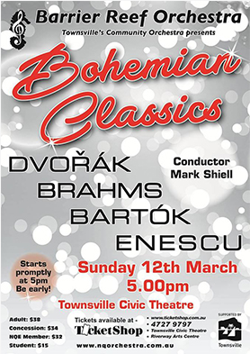

Welcome!
The Barrier Reef Orchestra – A North Queensland Icon with over a decade of playing for appreciative audiences, the Barrier Reef Orchestra has earned a secure spot in the affections of North Queenslanders.
A unique organisation, we reach across many areas of the local community, uniting people in our desire to share an enjoyment of music. Whether player or listener, there is something for everyone.
A key element of our orchestra is variety: players come from all walks of life, from music educator to miner, student to specialist, physicist to frog researcher; our esteemed conductors are leading lights in the music worlds of Melbourne, Canberra, Brisbane and London; our soloists range from developing local talent to internationally recognised artists; our music repertoire is wide, including well loved classics, newly composed classical pieces and swing/jazz.
Mix all these elements together and you have our iconic Barrier Reef Orchestra.
Want to become a member?
Next Concert
 More...Newsfeed
Notice of 2017 Annual General Meeting
NORTH QUEENSLAND ENSEMBLES INC BARRIER REEF ORCHESTRA ABN: 73-365-249-138 All members are advised that the Annual General Meeting (AGM), of North Queensland Ensembles Inc will take place at Pimlico Performing Arts Centre, Fulham Road, Pimlico on Sunday 21st May 2017, commencing at 2:00pm. A copy of the agenda ...
MoreReview – AFCM 25th Anniversary Concert
A very pleasant Sunday afternoon in Queens Gardens was attended by approximately three and half thousand satisfied music lovers. This free concert organised to celebrate the 25th Anniversary of the AFCM was also a fitting opportunity for BRO to celebrate its 15th Anniversary with it’s first ever outdoor public performa...
MoreReview – Dreams and Dances
Dance and music go together like a, ahem, horse and carriage or in 2016 a iPhone and thumb! But unlike the old song you certainly can have one without the other and the Barrier Reef Orchestra’s first concert for the year Dreams and Dances definitely proved that. The first half of the program featured dance music in its ...
More